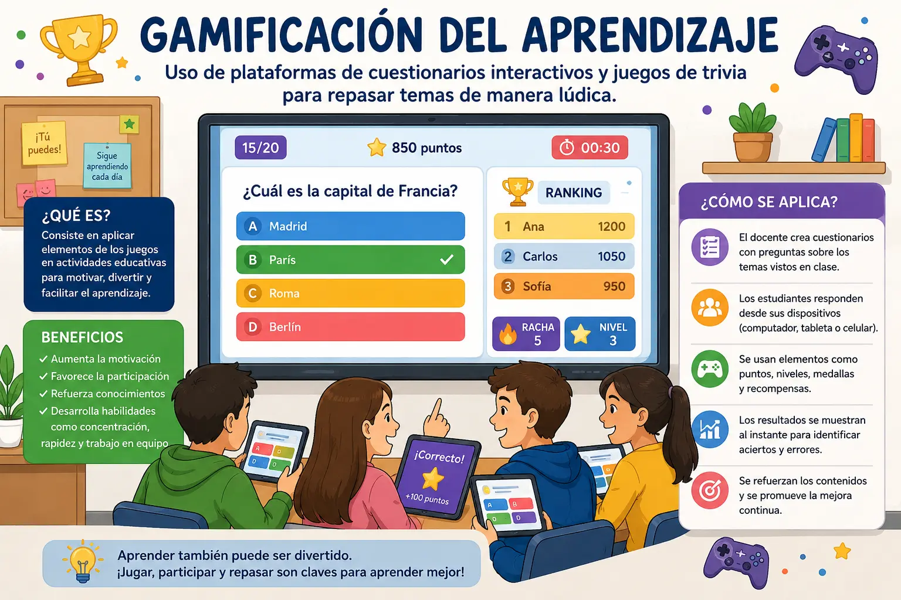

Gamificación del aprendizaje
La gamificación del aprendizaje consiste en utilizar elementos propios de los juegos dentro de las actividades educativas. Su objetivo es hacer que aprender sea una experiencia más entretenida y motivadora para los estudiantes. En lugar de realizar únicamente ejercicios tradicionales, se pueden utilizar preguntas, retos, puntos, niveles o recompensas que permitan repasar los contenidos de una manera diferente.
Una de las formas más sencillas de aplicar la gamificación es mediante plataformas de cuestionarios interactivos. Estas herramientas permiten que los docentes preparen preguntas relacionadas con los temas vistos en clase y que los estudiantes respondan desde un computador, tableta o teléfono. Los resultados pueden aparecer rápidamente, lo que permite conocer cuáles fueron las respuestas correctas y cuáles necesitan ser revisadas.
Los juegos de trivia también pueden utilizarse como una estrategia para reforzar los conocimientos. El profesor puede preparar preguntas de diferentes niveles de dificultad y organizar una actividad individual o por equipos. De esta manera, los estudiantes tienen la oportunidad de recordar información que ya habían estudiado mientras participan en una dinámica más entretenida.
Otra ventaja de estas actividades es que pueden aumentar la participación de los estudiantes. Algunas personas pueden sentirse nerviosas al responder preguntas frente a toda la clase, pero una actividad interactiva puede crear un ambiente más dinámico. Además, los estudiantes pueden aprender de sus errores al recibir una explicación después de responder una pregunta.
La gamificación también puede ayudar a desarrollar habilidades como la concentración, la rapidez para tomar decisiones y el trabajo en equipo. Cuando una actividad se realiza en grupos, los estudiantes deben escuchar las opiniones de sus compañeros, analizar las posibles respuestas y llegar a una decisión. Esto permite combinar el aprendizaje de los contenidos con habilidades necesarias para trabajar con otras personas.
Sin embargo, utilizar juegos en clase no significa que todo tenga que convertirse en una competencia. Es importante que el docente utilice estas herramientas de acuerdo con los objetivos de aprendizaje. Los puntos y las recompensas pueden ser útiles para motivar, pero lo más importante es que los estudiantes comprendan los temas y no se preocupen solamente por obtener el primer lugar.
Para que una actividad de gamificación funcione correctamente, el docente debe preparar preguntas claras, relacionadas con el tema y adecuadas al nivel de los estudiantes. También es recomendable revisar los resultados después del juego para identificar las dificultades que tuvieron. De esta manera, el cuestionario no queda solamente como una actividad divertida, sino que se convierte en una forma de comprobar y reforzar lo aprendido.
En conclusión, la gamificación puede ser una buena estrategia para hacer que las clases sean más participativas y dinámicas. Las plataformas de cuestionarios y los juegos de trivia permiten repasar diferentes temas de una manera sencilla y entretenida. Cuando se utilizan con una buena planificación, estas herramientas pueden complementar las clases tradicionales, aumentar la participación y ayudar a los estudiantes a aprender mientras ponen a prueba sus conocimientos.
